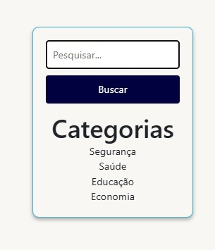

Introdução
Informações básicas do projeto como nome e membros da equipe.
Informações Gerais
- Projeto: SOFIA
- Repositório GitHub: SOFIA
- Membros da equipe:
Contexto
Detalhes sobre o espaço de problema, justificativas e os objetivos do projeto.
Problema
O problema que a aplicação enfrentará é a vulnerabilidade dos idosos aos golpes na internet devido à falta de familiaridade com o mundo digital. Muitos idosos não estão familiarizados com as nuances da segurança online, o que os torna alvos fáceis para que golpistas ou pessoas maliciosas se aproveitem dessa falta de conhecimento. Além disso, a falta de segurança dos idosos na internet representa um desafio adicional, já que muitos deles podem precipitadamente compartilhar informações pessoais sensíveis ou serem vítimas de phishing, fraudes financeiras e outros tipos de crimes cibernéticos.
Objetivos
Nosso objetivo é criar um site destinado a idosos, onde eles possam encontrar informações de seu interesse e aprender a se proteger contra golpes online. O site terá seções explicativas sobre temas como Educação Digital, Verificação de Links e Emails, Filtros de Conteúdo, Compartilhamento Seguro de Informações, além de outras funcionalidades.
Justificativa
Identificamos que por conta de uma falta de educação digital, de forma ingênua, muitos idosos acabam se tornando vítimas de ataques digitais de golpistas, muitas vezes acarretando em prejuízos financeiros e morais.
A SOFIA nasceu para suprir esse problema da falta de informação sobre segurança digital, trazendo uma plataforma intuitiva, de forma á informar e evitar que mais pessoas se tornem vítimas desses ataques mais comuns.
Público-alvo
Sofia direciona seus esforços ao público idoso, caracterizado por sua dificuldade em acessar informações online com segurança e pela falta de familiaridade com a navegação e utilização adequada de websites.
Concepção (Design Thinking)
Detalhes do processo de discovery do projeto.
Apresente o processo de discovery do projeto. Com foco na experiência do usuário, esse processo abrange a compreensão do contexto do problema e das características do usuário, a definição do problema, a geração de ideias, a prototipagem e a elaboração de uma proposta de solução
Processo de Design Thinking
O arquivo que se segue apresenta o resultado desse processo.
Apresente o processo de Design Thinking realizado pelo grupo e documentado por meio do software Miro. No documento apresentado, devem ser incluídos: (1) a matriz CSD, (2) o mapa de stakeholders, (3) as personas, (4) as respectivas propostas de valor e (5) o processo de ideação identificando as ideias levantadas e sua priorização.
Especificações do Projeto
Documentação das especificações do projeto.
Apresente as especificações do projeto, incluindo as histórias de usuário e os requisitos funcionais e não funcionais.
Histórias de Usuários
Com base na análise das personas foram identificadas as seguintes histórias de usuários:
Apresente aqui as histórias de usuário que são relevantes para o projeto de sua solução. As Histórias de Usuário consistem em uma ferramenta poderosa para a compreensão e elicitação dos requisitos funcionais e não funcionais da sua aplicação. Se possível, agrupe as histórias de usuário por contexto, para facilitar consultas recorrentes à essa parte do documento.
| EU COMO... | QUERO/PRECISO... | PARA... |
|---|---|---|
| Usuário idoso que utiliza celular e computador para acessar a internet | receber notificações de segurança sempre que um link suspeito for detectado em emails ou mensagens de textos | evitar cair em golpes online. |
| Usuário idoso que utiliza tablet e celular para aprender crochê e receitas culinárias | ter acesso a tutoriais interativos e vídeos explicativos dentro da aplicação | facilitar o aprendizado e a prática dessas atividades. |
| Usuário idoso que utiliza celular para se manter conectado com a família | ter uma funcionalidade de videochamada de fácil acesso e com boa qualidade de imagem e som | conversar com meus familiares de forma mais próxima mesmo à distância. |
| Usuário idoso que utiliza aplicativos como WhatsApp e Facebook | ter um guia passo a passo dentro da aplicação SOFIA | aprender a identificar perfis falsos e golpes e me proteger melhor enquanto uso essas redes sociais. |
| Usuário idoso que utiliza o computador para acessar sites de notícias e consultar processos legais | de um plugin de verificação de segurança que analise automaticamente os links desses sites | evitar clicar em conteúdo malicioso. |
| Usuário idoso que utiliza o celular para se informar sobre corridas e eventos esportivos na cidade | receber alertas de segurança relacionados a eventos falsos ou golpes envolvendo ingressos e inscrições | evitar fraudes. |
| Usuário idoso que utiliza o celular para se conectar com pacientes | ter uma função de verificação de autenticidade de mensagens e emails recebidos | garantir que estou interagindo apenas com pessoas reais e evitar enganos. |
| Administrador do sistema SOFIA | ter um painel de controle centralizado para monitorar atividades suspeitas de usuários | permitir uma intervenção rápida em caso de potenciais golpes ou ameaças. |
| Administrador do sistema SOFIA | ter relatórios detalhados sobre o uso da aplicação por parte dos usuários idosos, incluindo métricas de engajamento, feedbacks e problemas relatados | tomar decisões informadas e melhorar a experiência do usuário. |
| Administrador do sistema SOFIA | enviar mensagens e alertas em massa para todos os usuários idosos cadastrados na aplicação | fornecer informações importantes sobre novas ameaças e dicas de segurança online. |
| Administrador do sistema SOFIA | de um sistema de suporte técnico integrado para atender rapidamente às dúvidas e problemas dos usuários idosos | garantir uma experiência de uso tranquila e segura. |
| Administrador do sistema SOFIA | ter um sistema de autenticação robusto e seguro para garantir que apenas usuários autorizados tenham acesso às funcionalidades avançadas da aplicação | proteger assim os dados sensíveis dos idosos. |
| Administrador do sistema SOFIA | integrar novas funcionalidades e atualizações de forma gradual e testada | garantir uma transição suave e sem interrupções na experiência dos usuários idosos. |
Requisitos
As tabelas que se seguem apresentam os requisitos funcionais e não funcionais que detalham o escopo do projeto.
Com base nas Histórias de Usuário, enumere os requisitos da sua solução. Classifique esses requisitos em dois grupos:
- Requisitos Funcionais (RF): correspondem a uma funcionalidade que deve estar presente na plataforma (ex: cadastro de usuário).
- Requisitos Não Funcionais (RNF): correspondem a uma característica técnica, seja de usabilidade, desempenho, confiabilidade, segurança ou outro (ex: suporte a dispositivos iOS e Android).
Lembre-se que cada requisito deve corresponder à uma e somente uma característica alvo da sua solução. Além disso, certifique-se de que todos os aspectos capturados nas Histórias de Usuário foram cobertos.
Requisitos Funcionais
| ID | Descrição do Requisito | Prioridade |
|---|---|---|
| RF-001 | Permitir que o usuário realize buscas através de palavras-chave. | ALTA |
| RF-002 | Gerar artigos a partir do JSON Server. | ALTA |
| RF-003 | Permitir que o usuário filtre os artigos por categoria. | ALTA |
| RF-004 | Permitir que os usuários enviem denúncias de golpes digitais sofridos. | MÉDIA |
| RF-005 | Permitir que o usuário visualize um mapa das regiões com mais incidência de golpes. | MÉDIA |
| RF-006 | O usuário deve ser capaz de visualizar todas as suas interações com o sistema através do seu Perfil. | MÉDIA |
| RF-007 | O usuário deve ser capaz de se cadastrar e realizar login através dos dados cadastrados. | MÉDIA |
| RF-008 | O usuário deve ser capaz de comentar nos artigos. | BAIXA |
Requisitos Não-Funcionais
| ID | Descrição do Requisito | Prioridade |
|---|---|---|
| RNF-001 | O sistema deve ser responsivo para ser capaz de ser executado em dispositivos móveis e desktop. | ALTA |
| RNF-002 | Deve utilizar tecnologia HTTPS. | ALTA |
| RNF-003 | Deve seguir as normas do LGPD e do Estatuto do Idoso. | ALTA |
| RNF-004 | Deve propor uma navegação autodidata ao usuário. | ALTA |
| RNF-005 | Deve ser capaz de armazenar as senhas dos usuários de forma criptografada. | ALTA |
| RNF-006 | O sistema deve processar requisições do usuário em no máximo 5s. | MÉDIA |
| RNF-007 | O sistema deve ser compatível com os navegadores Microsoft Edge, Google Chrome, Mozilla Firefox, Safari e Opera. | MÉDIA |
| RNF-008 | O sistema deve ser adaptável às necessidades especiais do usuário (alteração de tamanho de fonte, ajuste de brilho). | MÉDIA |
Projeto de Interface
Artefatos relacionados com a interface e a interacão do usuário na proposta de solução.
Apresente a ideia de interface que está sendo prevista para o projeto. Inclua os wireframes, o user/screen flow e o protótipo interativo.
User/Screen Flow e Protótipo interativo
Artefatos relacionados com a interface e a interacão do usuário na solução proposta.
O fluxo de usuário (User Flow) é uma técnica que permite ao desenvolvedor mapear todo fluxo de telas do site ou app. Essa técnica funciona para alinhar os caminhos e as possíveis ações que o usuário pode fazer junto com os membros de sua equipe. 
Um protótipo interativo apresenta o projeto de interfaces e permite ao usuário navegar pelas funcionalidades como se estivesse lidando com o software pronto. Veja o exemplo a seguir.
Protótipo Interativo:
Wireframes
Protótipo de telas do sistema em baixa fidelidade (rascunhos).
Os Wireframes são protótipos das telas da aplicação usados em design de interface para sugerir a estrutura de um site web e seu relacionamentos entre suas páginas. Um wireframe web é uma ilustração semelhante ao layout de elementos fundamentais na interface. 
Tela inicial:
Tela de Login:
Tela de Cadastro de Usuário:
Tela Inicial após o login:
Metodologia
Detalhes sobre a organização do grupo e o ferramental empregado.
Nesta parte do documento, você deve apresentar a metodologia adotada pelo grupo, descrevendo o processo de trabalho baseado nas metodologias ágeis, a divisão de papéis e tarefas, as ferramentas empregadas e como foi realizada agestão de configuração do projeto via GitHub.
Coloque detalhes sobre o processo de Design Thinking e a implementação do Framework Scrum seguido pelo grupo. O grupo poderá fazer uso de ferramentas on-line para acompanhar o andamento do projeto, a execução das tarefas e o status de desenvolvimento da solução.
Ferramentas
Relação de ferramentas empregadas pelo grupo durante o projeto.
Liste as ferramentas empregadas no desenvolvimento do projeto, justificando a escolha delas, sempre que possível. Inclua itens como: (1) Editor de código, ferramentas de comunicação, ferramentas de diagramação, plataformas de hospedagem, entre outras.
| Ambiente | Plataforma | Link de Acesso |
|---|---|---|
| Processo de Design Thinking | Miro | https://miro.com/app/board/uXjVKdA0GBw=/ |
| Repositório de código | GitHub | https://github.com/ICEI-PUC-Minas-PPLES-TI/plf-es-2024-1-ti1-0387100-sofia.git |
| User Flow | Miro | https://miro.com/app/board/uXjVKQotjOI=/ |
| Protótipo Interativo | Figma | https://figma.com/SOFIA |
| Wireframe | Figma | https://www.figma.com/file/GF4igj7VVGKD7AHdsxwrfh/SOFIA?type=design&node-id=0%3A1&mode=dev&t=AOuoK8TH0A9O1lz9-1 |
Gestão do Projeto
Divisão de papéis no grupo e apresentação da estrutura da ferramenta de controle de tarefas (Kanban).
Apresente a divisão de papéis e tarefas entre os membros do grupo. Informe quem é o Scrum Master, o Product Owner e os desenvolvedores. Informe também quem é o responsável pela documentação do projeto.
Apresente o quadro de gerenciamento do time (Kanban), seu formato e as experiências na utilização dessa ferramenta (GitHub Projects)
A divisão do grupo foi feita da seguinte forma:
Scrum Master: Victor Guimarães
Product Owner: Fernanda Sabino
Desenvolvedor: Lucas Ledsham
Desenvolvedor: Kelvin Mendes
A Documentação do projeto ficou como uma responsabilidade de todos os membros do grupo.
Controle de Versão
Estrutura do fluxo de trabalho no ambiente do GitHub.
Discuta como a configuração do projeto foi feita na ferramenta de versionamento (GitHub). Exponha como a gerência de tags, merges, commits e branchs é realizada. Discuta como a gerência de issues foi realizada.

O grupo seguirá o fluxo padrão do GitHub.
Solução
Esta seção apresenta todos os detalhes da solução criada no projeto.
Apresente cada uma das funcionalidades que a aplicação fornece tanto para os usuários quanto aos administradores da solução.
Inclua, para cada funcionalidade, itens como: (1) titulos e descrição da funcionalidade; (2) Estrutura de dados associada; (3) o detalhe sobre as instruções de acesso e uso.
Video do Projeto
O vídeo a seguir traz uma apresentação do problema que a equipe está tratando e a proposta de solução.
O video de apresentação é voltado para que o público externo possa conhecer a solução. O formato é livre, sendo importante que seja apresentado o problema e a solução numa linguagem descomplicada e direta.
Utilize o recurso de compartilhamento via embed e inclua o vídeo logo abaixo.
Funcionalidades
- Exibição de Artigos via JSON Server
- Busca por palavras-chave
- Filtro de artigos por categoria
- Central de Denúncias
- Mapa de Golpes
- Comentários nos artigos
- Perfil com interações do usuário
- Cadastro de usuários e login
Apresente cada uma das funcionalidades que a aplicação fornece tanto para os usuários quanto aos administradores da solução.
Inclua, para cada funcionalidade, itens como: (1) titulos e descrição da funcionalidade; (2) Estrutura de dados associada; (3) o detalhe sobre as instruções de acesso e uso.
Funcionalidade 1 - Mapa de Exibição
Permite a visualização de regiões que estão mais propícias a idosos levarem golpes
- Estrutura de dados: Regiões
- Instruções de acesso:
- Faça o login
- Vá para a Seção Mapa de Denúncias
- Observe os dados gerados
Funcionalidade 2 - Central de Denuncias
Permite o cadastro de uma denuncia de um golpe
- Estrutura de dados: Reports
- Instruções de acesso:
- Faça o login
- Vá para a Seção Central de Denúncias
- Responda o formulário
- Observe a Danúncia sendo gerado
Funcionalidade 3 - Exibição de Artigo
Permite, leitura de um artigo
- Estrutura de dados: Informativos
- Instruções de acesso:
- Abra o site e efetue o login
- Vá para a Página Inicial
- Desça a tela até a seção Artigos Recentes para visualizar os cards gerados através do JSON Server
Funcionalidade 4 - Filtro de Categoria
Permite colocar um filtro na pagina de artigos
- Estrutura de dados: Categorias
- Instruções de acesso:
- Abra o site e efetue o login
- Vá para a Página Inicial
- Em seguida, selecione o filtro escolhido

Funcionalidade 5 - Buscador
Permite a busca artigos pelo titulo
- Estrutura de dados: Informativos
- Instruções de acesso:
- Abra o site e efetue o login
- Acesse o menu principal e vá até a seção Artigos Recentes
- Em seguida, pesquise por uma palavra-chave no campo de busca
Funcionalidade 6 - Cadastro de Usuario
Permite a inclusão de usuarios para o sistema
- Estrutura de dados: Usuarios
- Instruções de acesso:
- Acesse o menu principal e no menu clique em Cadastre-se/li>
- Em seguida, preencha o formulário de cadastro
Funcionalidade 7 - Perfil do Usuario / Mostrar Relatos e Comentários Cadastrados
Permite a inclusão, leitura, alteração e exclusão de relatos e comentarios
- Estrutura de dados: Comentarios e Reports
- Instruções de acesso:
- Abra o site e efetue o login
- Acesse o menu principal e vá para o ícone de Perfil
- Em seguida, aparecerá as informações
Funcionalidade 8 - Campo de Comentários na Página do Artigo
Permite a inclusão de um comentario na pagina de artigos
- Estrutura de dados: Comentarios
- Instruções de acesso:
- Abra o site e efetue o login
- Acesse o menu principal e clique em um dos cards de Artigo
- Abaixe até o final da tela e faça seu comentário

Estruturas de Dados
Descrição das estruturas de dados utilizadas na solução com exemplos no formato JSON.
Apresente as estruturas de dados utilizadas na solução tanto para dados utilizados na essência da aplicação quanto outras estruturas que foram criadas para algum tipo de configuração
Nomeie a estrutura, coloque uma descrição sucinta e apresente um exemplo em formato JSON.
Estrutura de Dados - Usuarios
Registro dos usuários do sistema utilizados para login e para o perfil do sistema
{
"id": 1,
"login": "admin",
"senha": "123",
"nome": "Administrador do Sistema",
"email": "admin@abc.com"
}
Estrutura de Dados - Informativos
Registro dos artigos cadastrados
{
"id": 1,
"titulo": "Golpe do Empréstimo Consignado: saiba como se proteger",
"imagem": "../assets//img/golpe_consignado.png",
"conteudo": "O Crédito consignado tem servido como isca para criminosos atraírem funcionários públicos, aposentados e pensionistas do INSS. Saiba como identificar esse tipo de golpe e se proteger das ameaças.",
"categoriaId": 1,
"dataDePublicacao": "2024-05-19"
}
Estrutura de Dados - Categorias
Registro das categorias utilizados na pagina de artigos
{
"id": 1,
"nome": "Segurança"
}
Estrutura de Dados - Incidentes
Registro das denuncias
"reports": [
{
"id": "7684",
"name": "Lucas",
"email": "lucas@email.com",
"city": "Belo Horizonte",
"report": "Relato exemplo!\nEste é um exemplo de relato para demonstrar a funcionalidade do CRUD usando o JSON-Server. Além disso, serve para mostrar a funcionalidade do Perfil, que busca o relato diretamente do JSON-Server."
}
]
Estrutura de Dados - Regioes
Registro das regioes das denuncias para complementar o mapa
"regioes": [
{
"id": "1",
"regiaoId": 1,
"nome": "Regional Norte",
"coords": [
-19.8704,
-43.9346
]
}
Estrutura de Dados - Reports
Registro da central de denuncia
"reports": [
{
"id": "7684",
"name": "Lucas",
"email": "lucas@email.com",
"city": "Belo Horizonte",
"report": "Relato exemplo!\nEste é um exemplo de relato para demonstrar a funcionalidade do CRUD usando o JSON-Server. Além disso, serve para mostrar a funcionalidade do Perfil, que busca o relato diretamente do JSON-Server."
}
]
Estrutura de Dados - Comentarios
Registro de um comentario na pagina de artigos
"comentarios": [
{
"id": "d502",
"texto": "Estou adorando os conteúdos da página. Continuem com o bom trabalho. PARABÉNS!!!"
}
]
Módulos e APIs
Esta seção apresenta os módulos e APIs utilizados na solução.
Apresente os módulos e APIs utilizados no desenvolvimento da solução. Inclua itens como: (1) Frameworks, bibliotecas, módulos, etc. utilizados no desenvolvimento da solução; (2) APIs utilizadas para acesso a dados, serviços, etc.
Fonts:
- Icons Font Face - https://fontawesome.com/
Scripts:
- Bootstrap 4 - http://getbootstrap.com/
FAQ
Perguntas e respostas comuns associadas ao projeto.
Apresente uma lista de perguntas e respostas comuns associadas ao projeto. Inclua perguntas como: (1) detalhes de acesso e uso do projeto; (2) informações sobre a instalação e configuração da aplicação; (3) questões sobre a manutenção da aplicação; (4) detalhes sobre a integração da aplicação com outros sistemas; (5) questões sobre a segurança da aplicação.
Referências Bibliográficas
Esta seção apresenta as referências bibliográficas utilizadas no projeto.
Apresente as referências bibliográficas utilizadas no projeto. Inclua itens como: (1) livros, artigos, tutoriais, etc. utilizados no desenvolvimento da solução; (2) links para sites, blogs, etc. utilizados no desenvolvimento da solução.